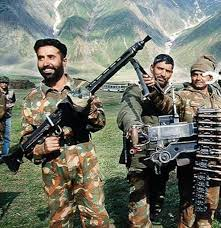
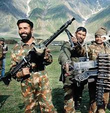

About Captain Vikram Batra
Captain Vikram Batra (1974–1999) was an officer of the Indian Army who was martyred during the **Kargil War in 1999**. He is one of India's greatest military heroes and was posthumously awarded the **Param Vir Chakra (PVC)**, India's highest military honor, for his extraordinary bravery.
He was instrumental in capturing the crucial **Peak 5140**, where he famously signaled his victory by saying, **"Yeh Dil Maange More!"** (This heart wants more!). His final operation was leading a dangerous mission to recapture Peak 4875.
Captain Batra's fearless leadership, magnetic personality, and ultimate sacrifice in the line of duty made him a timeless icon of the Indian Armed Forces.
Early Life and the Dream of the Uniform
Vikram Batra was born on **September 9, 1974**, in Palampur, Himachal Pradesh. From a young age, he showed a keen interest in the Armed Forces, inspired by the stories of war heroes. After completing his Master's degree, he successfully cleared the Combined Defence Services (CDS) Examination and joined the Indian Military Academy (IMA) in Dehradun in 1996. He was commissioned as a Lieutenant into the 13th Battalion, Jammu and Kashmir Rifles (13 JAK Rif).
The Call of Kargil
In June 1999, the **Kargil War** broke out as Pakistani intruders occupied strategic peaks in the Himalayan ranges. Lieutenant Batra's unit was rushed to the Drass sector. He was soon given the task of recapturing the heavily fortified **Peak 5140**, a strategically vital and difficult objective.
The Battle for Peak 5140
Captain Batra (promoted shortly before the operation) planned a daring, near-vertical climb from the East. Leading from the front, he engaged enemy forces in fierce hand-to-hand combat, killing three soldiers and motivating his team to victory. It was after this successful capture that he famously radioed his code word, **"Victory,"** followed by the iconic phrase, **"Yeh Dil Maange More!"** The capture of Peak 5140 was a major morale boost for the Indian Army.
The Final Mission: Peak 4875
The very next task for his company was to capture **Peak 4875**, another critical point. The operation was challenging due to the steep, icy slopes and heavy enemy fire. On **July 7, 1999**, during a crucial phase of the assault, Captain Batra spotted a junior officer pinned down and severely injured. Without hesitation, he rushed forward to rescue him, exposing himself completely to the enemy's machine gun fire. As he shielded the injured soldier, he was hit in the chest and head.
Martyrdom and PVC
Even as he fell, his last words were reportedly, **"Jai Mata Di"** (Victory to the Mother Goddess). His final act of selflessness ensured the injured man's life was saved, but cost him his own. His exemplary leadership and unparalleled bravery during the capture of Peaks 5140 and 4875, leading to the enemy's defeat, earned him the **Param Vir Chakra**, posthumously. Captain Batra's story of courage, leadership, and absolute dedication to the nation remains one of the most celebrated chapters in modern Indian military history.

 
